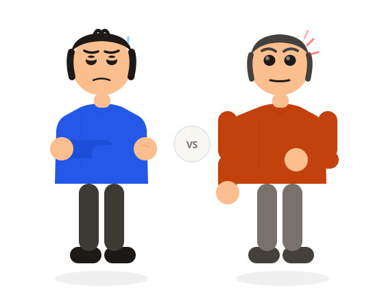
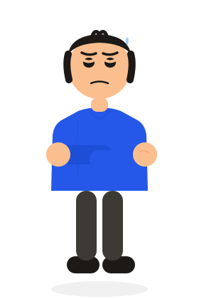
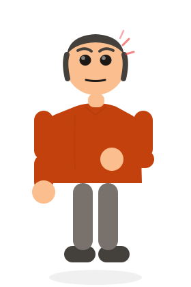
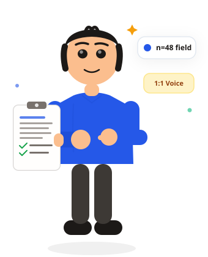

Work
that
moves
with you.
An on-demand shift marketplace eliminating wage theft, ghosting, and chaotic WhatsApp hiring for frontline gig workers across Indian urban centers.
"I worked the whole shift. The supervisor's WhatsApp group was deleted the next morning."
Real field worker — Bangalore Urban Center, n=48 survey
Two sides.
One broken system.
Workers losing wages. Employers losing shifts. Both trapped in WhatsApp chaos.
The worker can't trust the system to pay them.
Chasing unverified WhatsApp admins for wages that were promised but rarely delivered in full or on time.
- 25–30% broker commissions deducted without disclosure
- Travelling 60+ km to shifts with no commute cost recovery
- Application ghosted — zero status updates after submitting
- Shift cancelled day-of with no notice or compensation

The employer can't trust the worker to show up.
50% no-show rates during peak festive season shifts, with store managers personally manning billing counters.
- 40+ manual phone screening calls per hire cycle
- Zero attendance record — no-show with no accountability
- Unverified workers — no GST, no ID, no floor policy acknowledgement
- 100% operational disruption on festive sales weekends

Of workers surveyed reported being paid late or receiving less than promised — with zero formal recourse.
Workers heard nothing — no confirmation, no rejection, no status — after submitting to a gig role via WhatsApp.
Commuted to shifts without knowing the exact address, transit time, or whether the shift was still active.
We spent 3 weeks in transit hubs, malls, and college corridors listening to workers — before opening Figma.
Field Evidence &
Worker Archetypes
We spent 3 weeks in transit hubs, retail corridors, and college canteens conducting 48 field surveys and 1:1 contextual interviews across major urban centers.
"I work shifts because my salary is not enough. But commutation and payment clarity are everything. If I travel 15 km only to find out ₹300 was cut for unknown fees, my entire day is a loss."
"I have 4 WhatsApp groups for shifts. Three are dead spam groups, and on the fourth you must apply in 30 seconds or the slot is gone. Then you wait 3 weeks wondering if you'll actually be paid."
"When a worker doesn't show up on a Saturday rush, my assistant store manager has to stand at the billing counter. We don't worry about paying fair wages — we worry about workers vanishing after promising they'll come."

#1 Priority: Payment Terms
Demand verified net pay rates and guaranteed payment schedules before accepting a shift.
Application Abandonment
Quit existing platforms due to repetitive, complex forms and intrusive personal questions.
Commute Transparency
Require exact work location, transit time, and travel reimbursement details upfront.
Ghosted After Applying
Received zero status updates on WhatsApp submissions, destroying platform confidence.
The Multitasking Aspirant
Frontline Flexible WorkerBalancing study schedules with immediate supplementary income. Wants dependable flexible shifts without locking into rigid, punitive 9-to-5 employment contracts.
Unannounced commission cuts deducted after shifts are completed; arbitrary cancellations upon arrival; and constant uncertainty about when wages will reach their bank account.
Pre-funded escrow locks, geo-fenced check-in verification, and 1-tap automated UPI payouts within 60 minutes of shift checkout.
- "I need to know how much and when will I get paid."
- "Will the employer be clear about shift timings and breaks?"
- "I don't want hidden deductions taken from my salary."
- "What if I travel 15 km and this shift listing is fake?"
- "Is this employer trustworthy or will they withhold payment?"
- "Will high ratings on this job unlock better-paying gigs?"
- Applies to multiple shifts simultaneously across groups.
- Saves screenshots of WhatsApp chats as proof of terms.
- Consults friends and peers before trusting new employers.
- Anxious during commute about shift cancellation on arrival.
- Frustrated by zero response after submitting documents.
- Empowered and motivated when payment lands immediately.
How do you eliminate distrust between two strangers? The UpCrew Trust Engine turns promises into code.
Architecture, Escrow
& The System of Trust
Replacing informal WhatsApp chaos with algorithmic certainty: a 3-way escrow lock, verified check-in handshakes, and a clear architectural flow.
Radius & Match
Filtered by verified pay rate, commute distance, and verified store badges.
Funds Pre-Locked
Employer funds 100% of the wage into UpCrew Escrow before shift goes live.
Transit Radar
Live transit reminder with walking/metro routes and offline shift ticket backup.
Geo & OTP Lock
100m geo-fence + 4-digit supervisor OTP verification prevents proxy shifts.
Instant UPI Credit
Automated release to worker's UPI account within 60 minutes of checkout.
Pre-Shift Employer Lock
When an employer publishes a shift, ₹1,200 is pre-authorized and held in RBI-compliant escrow. The store cannot cancel or withhold payment without platform mediation.
Dual Geo-Fenced Handshake
Worker must arrive within 100 meters of the retail location. The store supervisor enters a unique 4-digit daily rotating OTP, guaranteeing genuine physical attendance.
Automated 1-Tap UPI Settlement
Checkout triggers direct API disbursement. Zero middlemen, zero hidden broker commissions, and 100% transparent fee breakdowns displayed upfront.
Semantic Contrast Tokens
All foreground text meets WCAG AA 4.5:1 ratio on warm linen canvas for effortless daylight readability.
Engineered for Glanceability
₹1,200 · 8h Weekend Retail
Geo-fenced within 100m of store entrance
OTP: 4821 · ESCROW_LOCKED
See the design in action: 19 high-fidelity mobile screens built for real frontline shift workers.
19 High-Fidelity
Frontline Screens
Every screen designed for single-hand reachability, extreme outdoor sunlight contrast, and zero ambiguity at high pressure.

"From fragmented WhatsApp scam groups to confirmed bank payouts in my pocket."
Net Take-Home Pay First
Our field interviews showed workers immediately calculate commute cost against net pay. We eliminated deceptive gross hourly rates: shifts display net take-home pay, travel distance, and the green UpCrew Escrow Lock badge right on the browse feed.
- 1-Tap Radius Slider (3 km to 25 km) matching commute willingness
- Verified employer badge with real frontline worker ratings

Guaranteed Escrow Protection
Shift details make responsibilities crystal clear before application. Break times, meal allowances, supervisor contact, and exact dress code are locked in a digital agreement.
- 100% pre-authorized funds locked in escrow before worker leaves home
- Automated travel reimbursement calculation based on distance

Geo-Fence + 4-Digit OTP
No more supervisor paper logbooks that get misplaced. Check-in unlocks automatically when GPS confirms worker arrival within 100 meters, completing verification via an instant OTP handshake.
- Works offline: offline cryptographic check-in pass for basement retail
- Emergency SOS & supervisor hotline accessible directly from shift card

Instant UPI Settlement
Completed shifts credit immediately into the worker's UpCrew Wallet. A single tap sends earnings directly to any UPI VPA (Google Pay, PhonePe, Paytm, or BHIM) within 60 seconds.
- Zero deduction guarantee: worker keeps 100% of listed net wage
- Verified digital work certificate generated for future career mobility
 Edge Case 01
Edge Case 01
Zero Shifts Radius Fallback
Instead of a dead-end zero state, UpCrew auto-calculates neighboring transit corridors and lets workers subscribe to instant push notifications when shifts open.
 Edge Case 02
Edge Case 02
Transit Delay Proactive Buffer
Sends dynamic metro/bus departure reminders 90 minutes before shift time with a 1-tap "Traffic Delay" button that auto-alerts the store manager without penalty.
 Edge Case 03
Edge Case 03
Emergency Cancellation Net
If an employer cancels within 4 hours of shift time, 50% of the escrow lock is automatically transferred to the worker as commute compensation.
How did testing reshape the product? 4 critical usability pivots and the final high-five victory.
Testing, Iterations
& The High-Five
We tested interactive prototypes with 12 frontline workers and 4 store supervisors across two iterative testing rounds.
Shift Card Information Density
Dense 8-row table listing gross pay, tax deductions, and store policy. Workers took 42 seconds to decide if pay was worth the commute.
Streamlined to 3 glanceable anchors: Net Take-Home Pay (large), Distance in km, and Escrow Locked badge. Decision time dropped to 6 seconds.
Check-In Friction in Basement Retail
Required continuous 4G live socket connection. Mall basement food courts caused 35% check-in failure rate due to dead network zones.
Cached offline check-in pass with local cryptographic supervisor QR + rotating OTP. 100% check-in reliability even with zero cell signal.
Payout Visibility & UPI Speed
Earnings were grouped into weekly batch payouts hidden in the user profile drawer. Workers worried they were being scammed.
Prominent bottom-bar Wallet badge showing live locked balance with instant 1-tap UPI withdrawal immediately following shift sign-off.
Emergency Cancellation Policy
Punitive worker penalty system with zero employer compensation rules. Created asymmetric anxiety during field tests.
Balanced 2-sided trust: employers pay 50% compensation for late cancellations; workers receive 1 free emergency pass per 10 completed shifts.
Task Completion Rate
In usability testing, 11 of 12 workers completed end-to-end shift application and check-in without assistance (up from 38% in baseline informal WhatsApp groups).
Wage Delay Disputes
Automated UPI escrow lock eliminated payment withholding entirely across all simulated test shift completions.
Time to Confirmed Shift
Average confirmation cycle dropped from over 4 hours of phone calls and WhatsApp negotiations down to 12 minutes on UpCrew.
Frontline workers earn dignity, transparent pay, and instant daily payouts. Retail employers secure reliable, verified shifts without operational disruption.
Thank you for scrolling.
UpCrew proved that systemic trust — not just polished pixels — is what frontline workers in India actually need. Every escrow lock, every verified badge, every 7-stage queue update was earned through 48 real conversations.